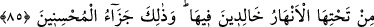

PEYGAMBERİMİZ VE YAHUDİLER
82. İnsanlar içerisinde îman edenlere en şiddetli düşman olarak yahûdîleri ve şirk
koşanları bulacaksın. Onlar içinde îman edenlere sevgi bakımından en yakın olarak
da “Biz hristiyanız.” diyenleri bulacaksın. Çünkü onların içinde keşişler ve râhipler
vardır ve onlar büyüklük taslamazlar.
83. Rasûle indirileni duydukları zaman, tanış çıktıkları gerçekten dolayı
gözlerinden yaşlar boşandığını görürsün. Derler ki: “Rabbimiz! Îman ettik, bizi
(hakka) şâhit olanlarla beraber yaz.”
84. “Rabb’imizin bizi iyiler arasına katmasını umarken, neden Allah’a ve bize
gelen hakka îman etmeyelim?”
85. Bu sözlerinden dolayı Allah onlara zemîninden ırmaklar akan, içinde ebedî
kalacakları cennetleri mükâfat olarak verdi. Güzel davrananların mükâfatı işte
budur.
86.
İnkâr
eden
ve
âyetlerimizi
yalanlayanlara
gelince
işte
onlar
cehennemliklerdir.
Ey Muhammed! “İnsanlar içerisinde, îman edenlere en şiddetli düşman olarak
yahûdîleri ve” Allah’a “şirk koşanları” Arap müşriklerini “bulacaksın. Onlar içinde
îman edenlere sevgi bakımından en yakın olarak da “Biz hristiyanız.” diyenleri
bulacaksın.” Yahûdîlerin ve âhireti inkâr eden müşriklerin bu şiddetli düşmanlıklarının
sebebi her türlü kötü ahlâkın kaynağı olan aşırı hırslarıdır.
Dünyâyı elde etmek için hırs gösteren insan bu arzusunu gerçekleştirmek için dîni bir
tarafa atarak bütün mahzurlu ve yasak şeylere tevessül eder. Bu yolda mal ve şan
kazanan herkese karşı da düşmanlığı artar. Hristiyanların îman edenlere karşı sevgileri